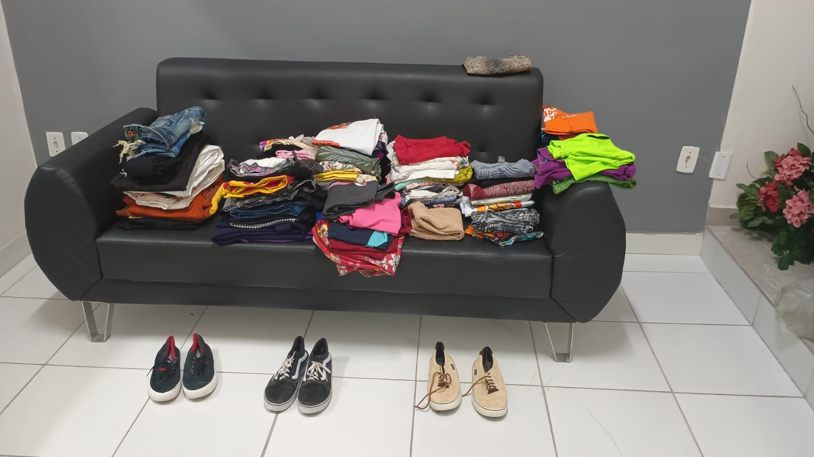
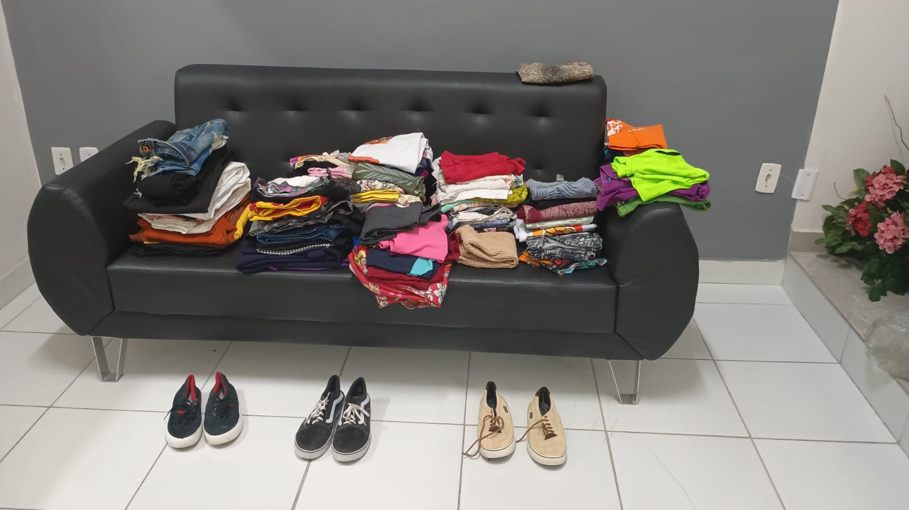

Sobre o Bazar
Objetivos
O I Bazar Solidário NINA tem como objetivo principal arrecadar fundos para financiar a castração e a compra de medicamentos essenciais, como antibióticos, antifúngicos e carrapaticidas, destinados aos animais acolhidos no campus. A iniciativa visa promover o bem-estar animal, contribuindo para o controle populacional responsável e o tratamento adequado dos animais resgatados.
Propostas
A proposta do evento é oferecer à comunidade a oportunidade de adquirir roupas, calçados e acessórios seminovos, de boa qualidade, a preços acessíveis. Serão vendidos itens para públicos infantil, masculino e feminino, com preços simbólicos de R$ 2,00, R$ 5,00 e R$ 10,00 (apenas para peças diferenciadas). Dessa forma, o bazar torna-se acessível a todos, permitindo que a comunidade participe ativamente da causa.
Para onde serão destinadas as Doações?
Toda a renda arrecadada será destinada à compra de medicamentos e à realização de castrações, ações fundamentais para a saúde e o bem-estar dos animais do campus. O I Bazar Solidário NINA é, portanto, uma oportunidade para unir solidariedade e responsabilidade social, envolvendo a comunidade em um esforço coletivo para melhorar a vida dos animais que precisam de cuidados urgentes. Ao participar, cada pessoa contribui diretamente para um futuro mais saudável e digno para esses animais.

 
